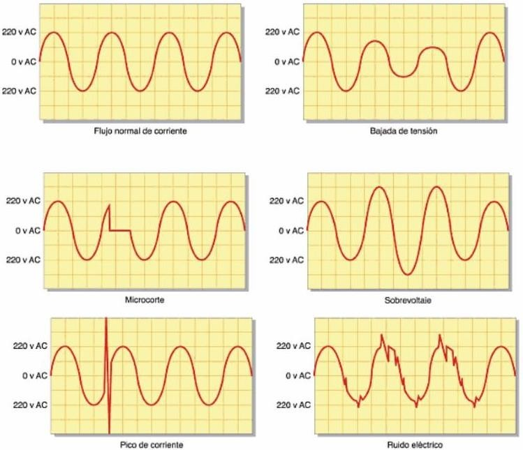
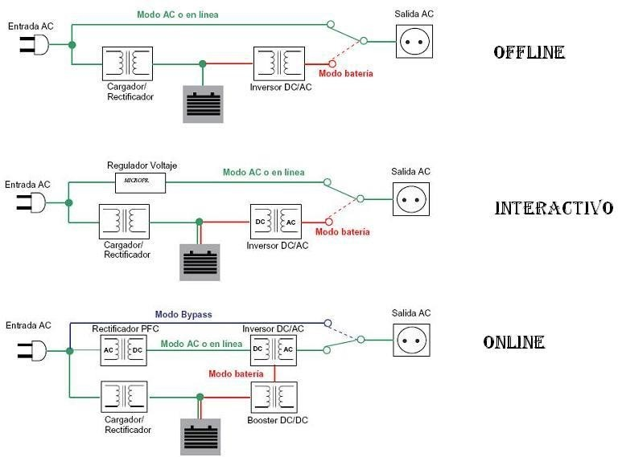

Seguridad activa
Sistemas de alimentación ininterrumpida (SAI - UPS)
Constituyen un elemeneto básico de protección de nuestro hardware y por extensión de los datos almacenados en él. A pesar de que por su nombre podríamos pensar que solo sirven para administrar energía durante un corte, además de hacer esa función durante un tiempo limitado, también sirven para proteger el hardware de picos, imperfecciones y caídas de tensión.

Existen varios tipos de SAIS:
- Standby u offline. Existe una corriente eléctrica directa, con algunos filtros, que pasa a través del SAI hasta el elemeneto qeu se quiere corregir. Consigue corregir pequeñas imperfecciones del suministro eléctrico que cuando son superadas, el SAI pasa a suministrar energía con sus propias baterías. Es habitual su uso en ordenadores personales.
- Interactivos. Ofrecen más protecciones que las anteriores pero su técnica es la misma. Su batería suele durar menos tiempo porque el elemeneto a proteger toma corriente de ella con más frecuencia. Es el que se suele utilizar en los pequeños servidores.
- Online. Trabaja constantemente proporcionando su propia corriente, independientemente de la que circula por la red. Es el que se suele utilizar en los centros de proceso de datos.

La unidad de potencia que utilizan los SAI son los voltiamperios (VA), que es la potencia aparente.
Mientras que la potencia efectiva es la que se mide en vatios (W).
Para calcular el SAI que necesitaremos, multiplicaremos la potencia efectiva por 1,4 y tendremos la potencia aparente.
En cuanto a la instalación de un SAI debemos tener en cuenta algunas cuestiones básicas:
- Manejarlo con precaución, por la elevada carga de sus baterías.
- Elegir un lugar adecuado para instalarlos.
- El orden de conexión de un SAI es:
- Enchufar todas las conexiones salientes. Es decir, todos los dispositivos que queremos proteger.
- Enchufar las conexiones entrantes. Es decir, la alimentación del propio SAI.
En cuanto a mantenimiento:
- Realizar inspecciones periódicas (conexiones, limpiezas, etc.)
- Comprobar el funcionamiento midiendo sus valores eléctricos mediante un osciloscopio o a través de su propio software, gracias a las conexiones USB y/o Ethernet que suelen incorporar de serie.
Regleta protectora
Es la solución más económica para la protección de las imperfecciones eléctricas, pero no son comparables a los SAIS, principalmente porque no protegen frente al corte de suministro. A pesar de ello, son útiles porque protegen de los problemas eléctricos más habituales.
Grupo electrógeno
Un grupo electrógeno es una máquina que genera energía eléctrica mediante un motor de combustión. Es habitual encontrarlos como medida de protección en lugares críticos como por ejemplo, en hospitales o en salas de servidores.
Monitorización del hardware
Se usa para comprobar el correcto funcionamiento del sistema y detectar errores en los componentes físicos, por ejemplo: comprobar la temperatura de la CPU, la velocidad de giro de los ventiladores, etc.
Hay dos tipos de monitorizaciones:
- Hardware. Se puede comprobar el funcionamiento de un componente midiendo las magnitudes eléctricas de los elementos que forman parte del sistema. Esta cuestión, en casos, puede resultar complicada pero en otros, con un simple polímetro resulta sencillo.
Funcionamiento de un polímetro. Es un aparato de medidas eléctricas, con él se pueden medir magnitudes directamente como la tensión, la intensidad, la resistencia eléctrica, la continuidad...
La intensidad se mide en Amperios (A), la tensión en Voltios (V) y la resistencia en Ohmios (Ω). Todas ellas tiene múltiplos y submúltiplos, por ejemplo, miliAmperios (mA).
- Software. En el mercado existen multitud de programsa que son de utilidad, no solo en la detección de errores si no también en la supervisión y monitorización de los elementos de un equipo. Por ejemplo, el administrador de tareas de Windows u otros comerciales como AIDA64, CPU-Z, etc.
Cableado
En este apartado habrá que tener en cuenta la utilización del cable homologado para su uso correspondiente, así como la realización de empalmes que cumplan con la normativa de seguridad vigente, y la utilización de mecanismos electrónicos también homologados. Recordar Normas sobre Cableado Estructurado del módulo de Redes de SMR1.
Fijación de componentes
Hay muchos motivos por los que resulta conveniente fijar de forma correcta los componentes de un ordenador:
- Porque el propio equipo produce vibraciones que pueden afectar a ciertas partes móviles de otros componentes (ventiladores, disipadores, tarjetas gráficas, etc.). Una solución puede ser el uso de kits antivibración.
- Existen conexiones como la de VGA del monitor sobre las que con el tiempo suele producirse una descolocación del componente, para ello se deberán utilizar los tornillos de sujección.
- Hay factores externos como por ejemplo los terremotos, que también afectan a esta cuestión pudiéndose utilizar soportes que absorvan este tipo de movimiento.
- Otro factor a tener en cuenta es el robo, para el que usar por ejemplo el conector de seguridad Kensington.
Racks y armarios ignífugos
Los racks pueden almacenar todo tipo de equipamiento eléctrico, informático y de comunicaciones. Suponen una medida más de serguridad activa, ya que disminuyen el riesgo de cortocircuito, limitan el acceso del personal y suelen estar instalados en las zonas más seguras del edificio.
Las medidas estándar de un armario rack se miden en:
- Ancho: pulgadas, normalmente 19".
- Alto: que se mide en U, 1U equivale a 1,75".
Un paso más allá de la seguridad es la utilización de los armarios ignífugos, especialmente diseñados con sistemas de protección contra el fuego.
Otros componentes de seguridad
A parte de los que hemos visto, se pueden considerar elementos de seguridad activa:
- Las propias carcasa o chasis de los equipos.
- Los maletines de transporte, en el caso de portátiles.
- Los sistemas de refrigeración líquida.
- Los protectores de pantalla.
- Los teclados resistentes a líquidos.
- Etcétera.